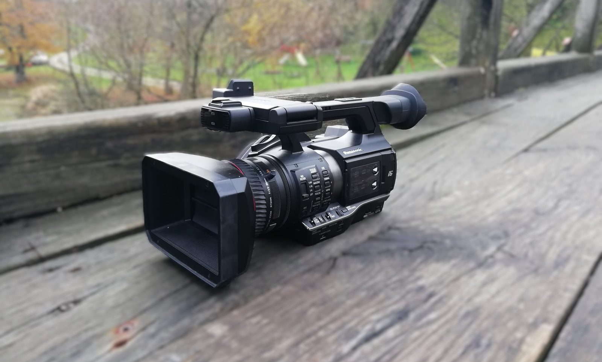

Short films with friends. Photos of whatever the light was doing that day. Filmmaking taught me framing, timing, and that a shot isn’t finished until somebody else watches it.
Photography taught me to wait. The good frame usually shows up a second after you’d have given up.

REC00:00:00:00f/2.81/50ISO 4000 shots
My camcorder on a bridge. Click the frame to take the shot.
2
Then the films needed to sound right.
So I opened FL Studio and didn’t close it for years. Drill beats, cold keys, 808s heavy enough to rattle a car door.
Production taught me patience. A loop is a hundred tiny decisions you only notice when one of them is wrong.
Play the keys A to K, drums on Z, X and C. The particles listen.
3
Live TV pulled it all together.
Now I help cover live soccer games. In live production there’s no second take: cameras, audio and graphics all have to land on the same frame, ninety minutes straight.
Off the pitch, I help with the software development behind the broadcasts. It’s where everything I’ve picked up so far finally gets used at once.
Preview
ProgramOn air
Drag the T-bar to fade the wall up, or hit Take to cut.
4
Now the instrument is code.
I study computer science at FRI in Ljubljana. I build games in Python, browser tools, a chess opponent, and a 3D adventure in the spirit of the N64 era.
Same instincts as before: framing, rhythm, timing. They just compile now.
signal.js
Things I’ve built
Some for the control room, some for fun, some to survive exam season.
Broadcast
Live soccer coverage
Part of the crew covering live soccer games for TV.
Broadcast
Broadcast software
Helping with the software development behind the live productions.
Game
N64-style action game
A 3D adventure that runs in the browser with that late-90s polygon look. In progress.
Game
Detective visual novel
A tropical murder mystery built in pygame, plus a puzzle adventure and a chess game with an AI opponent.
Tools
Study trainers
Interactive browser tools for operating systems and statistics that generate practice problems forever.
Music
Drill beats
Cold keys and heavy low end, made in FL Studio. Some of it still leaks onto Instagram.
Web
This site
Tens of thousands of particles and a synthesizer, running in your browser with no audio files at all.